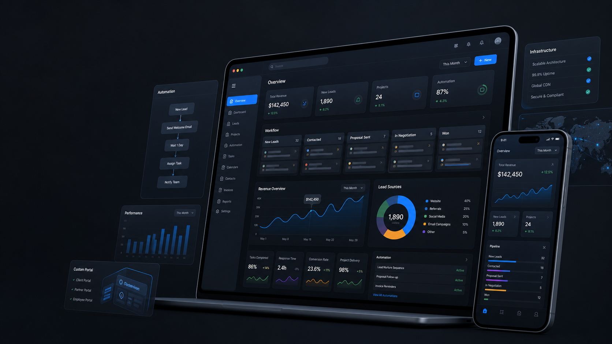

Bug Fixing
Resolve website and portal issues based on plan priority and scope.
TechMark Care
Launching a website or portal is only the beginning. TechMark Care keeps your digital systems updated, secure, optimized and ready for business growth.
Support scope
AMC converts post-launch support into a structured relationship with clear expectations and regular attention.
Resolve website and portal issues based on plan priority and scope.
Keep pages, images, service details, product sections and contact information current.
Monitor updates, backups and basic platform hygiene where supported by the stack.
Improve page titles, descriptions, internal links, content updates and technical basics over time.
Plans
Exact pricing can stay inquiry-only while visitors still understand what kind of support is available.
Best for small websites that need basic monthly updates, bug fixing and technical hygiene.
Best for businesses that need regular page improvements, SEO hygiene and conversion updates.
Best for websites and portals that need priority help, workflow fixes and ongoing product support.
Why AMC matters
Without structured support, small bugs, outdated content, slow pages and missed SEO updates quietly reduce trust. TechMark Care gives your business a regular support rhythm instead of emergency-only maintenance.

Need ongoing support?
Share your website URL, current platform, urgency and support needs. We will suggest the right monthly plan.